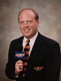
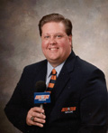
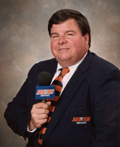
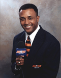
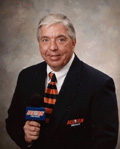
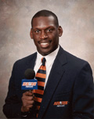
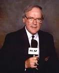
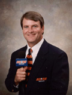
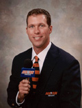

|  |
Rod Bramblett - Tiger Talk Host, Radio Lockerroom Host, Baseball
Radio Play-By-Play, Men's Basketball Radio Studio Host
Mail: bramblett@aunetwork.com
In 1998, Rod Bramblett began serving as the host for the Auburn
Network's weekly call-in show Tiger Talk. This season marks the first that Bramblett will serve as the network's host for the pre-game and post-game radio shows with players and head coach Tommy Tuberville. Since 1993, Bramblett
has served as the voice of Auburn Tiger baseball. He also serves
as studio host for the Auburn Network's men's basketball broadcasts.
Bramblett, a 1988 Auburn graduate, is Director of Broadcast Services
for the Auburn Network, where he is responsible for coordination
of the network's broadcast productions and projects.
|
|  |
Andy Burcham - Television Play-By-Play, Baseball Radio Play-By-Play
Mail: aburcham@aunetwork.com
Since 1990, Burcham has performed a wide range of duties for
the Auburn Network. Burcham handles play-by-play duties for all
pay-per-view and tape delay broadcasts. The Nashville, Ill., native is also a
member of the Auburn Network's baseball broadcast team. The Indiana
State graduate is also the voice of all Auburn women's basketball
radio broadcasts. Burcham is the sports director for Tiger Communications
in Auburn.
|
|  |
Paul Ellen - Football Radio Studio Host
Mail: pellen@aunetwork.com
Ellen has handled the studio host role for all Auburn Network
football broadcasts since 1990. No stranger to Auburn fans, Ellen
served as play-by-play announcer for the Tigers during the 1979
and 1980 seasons and later handled the duties for the University
of Southern Mississippi. In his role with the network, Ellen anchors
football radio broadcasts from Auburn Network Control and also
hosts the pregame show live outside Jordan-Hare Stadium. An Auburn
graduate and native of Gadsden, Ellen is a sports marketing specialist
in Atlanta, Georgia.
|
|  |
Byron Franklin- Basketball Radio Color Analyst
Mail: bfranklin@aunetwork.com
Byron Franklin is the newest addition to the Auburn Network broadcast team. Franklin is beginning his first season as the network's basketball radio color analyst. Franklin, a former women's basketball assistant coach at Auburn under Joe Ciampi, starred for the Tigers in football and later had a successful career in the NFL. He is employed by Buffalo Rock Company, a soft drink distributor based in Birmingham.
|
|  |
Jim Fyffe - Radio Play-By-Play
Mail: jfyffe@aunetwork.com
Fyffe has been the lead announcer for Tiger football and men's
basketball since 1981. Born in Paintsville, Ky., Fyffe's signature
"TOUCHDOWN AUBURN!" has made him one of the most recognizable
voices in Southeastern Conference football. Fyffe is a graduate
of the University of Kentucky
|
|  |
Quentin Riggins - Football Radio Sideline Reporter
Mail: qriggins@aunetwork.com
An All-SEC linebacker and 1989 team captain for the Tigers, Riggins
has been the Auburn Network's football radio sideline reporter
since 1991. Riggins played professionally with Winnipeg of the
Canadian Football League and Raleigh-Durham of the World League
of American Football before returning to Auburn to complete work
on his degree, which he received in 1992. One of the most popular
players in Auburn history, the Montgomery native serves on the Staff of the Speaker of the House of the Alabama House of Representatives.
|
|  |
Phil Snow - Television Show Host
Mail: psnow@aunetwork.com
Snow hosts all of the Auburn Network's television shows including
The Auburn Football Review, The Auburn Football Preview, and The
Auburn Basketball Review. The Southern Mississippi graduate is
also the host of the Auburn Network's Auburn's Greatest Games
home video series and provides feature work and hosts the half-time
shows for the Auburn Network's pay-per-view television broadcasts.
Snow has hosted Auburn's television shows since 1976. He serves
as sports director for WSFA television in Montgomery.
|
|  |
Charlie Trotman - Football Radio Color Analyst
Mail: ctrotman@aunetwork.com
A 1980 Auburn graduate and former Tiger quarterback, Trotman
has handled color analysis for Auburn's football radio broadcasts
since 1986. Following his football career at Auburn, Trotman played
professional football for the Birmingham Stallions of the USFL
while completing his law degree at Cumberland School of Law. Trotman
is now a real estate developer in his hometown of Montgomery.
|
|  |
Stan White - Television Color Analyst
Mail: swhite@aunetwork.com
White joined the Auburn Network in 1999 and serves as the color analyst for all cable television and pay-per-view telecasts. An Auburn graduate and quarterback from 1990-93, White led the 1993 Tigers to a perfect 11-0 season. Following a professional football career, White now works as an insurance agent in his hometown of Birmingham.
|
|

© 2000 Auburn Network, Inc
|
Last updated Thursday, 20-Jul-2000 11:25:50 CDT
|